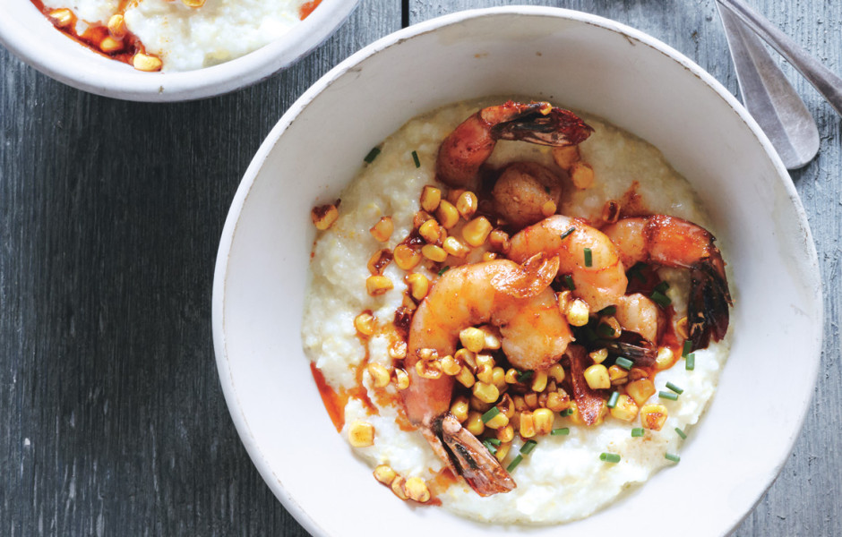
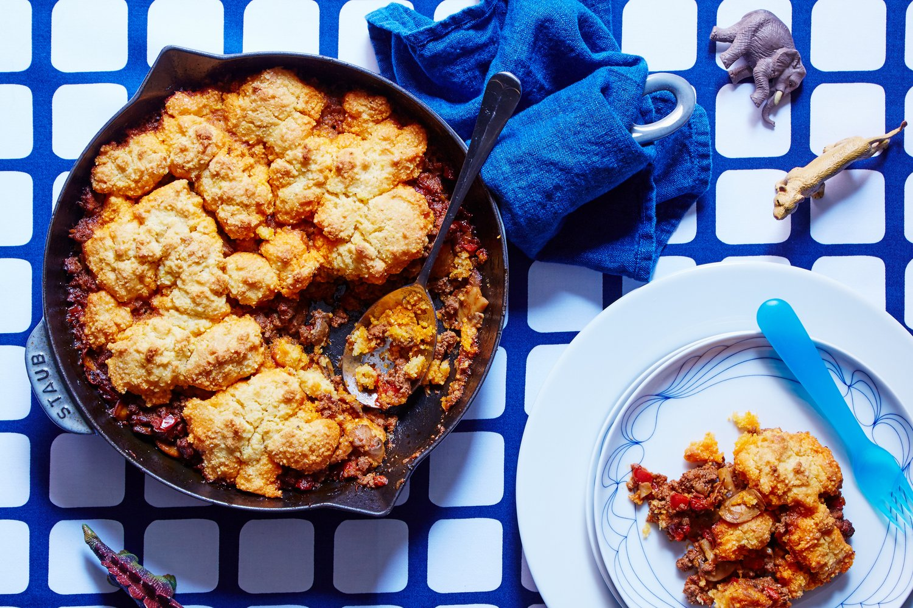
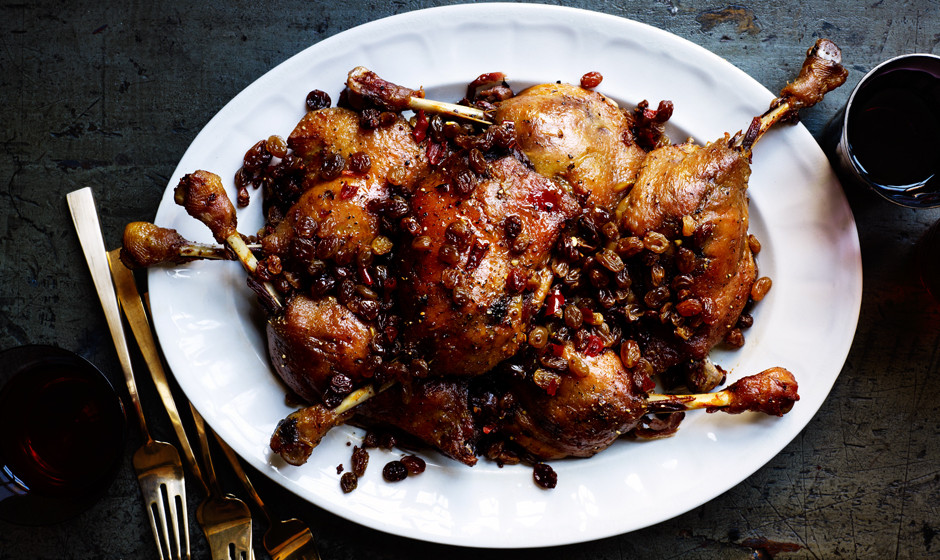
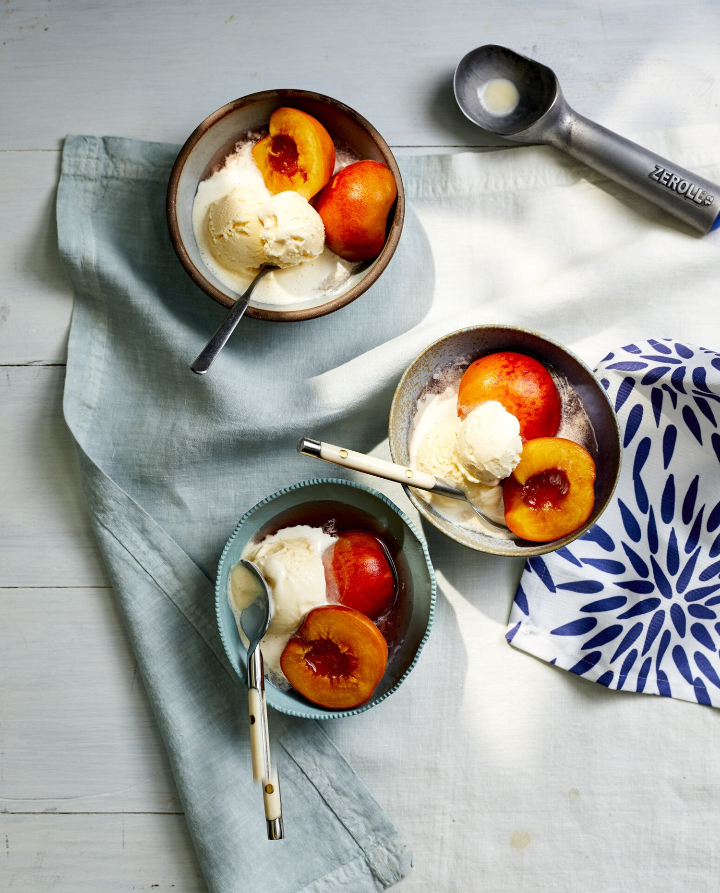
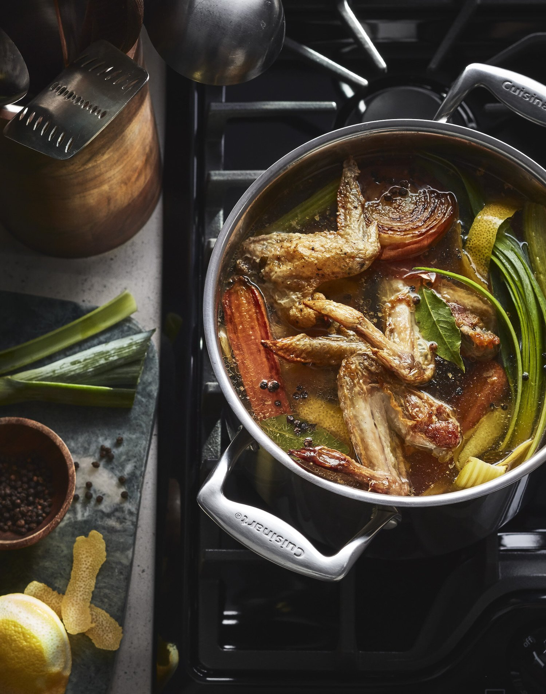
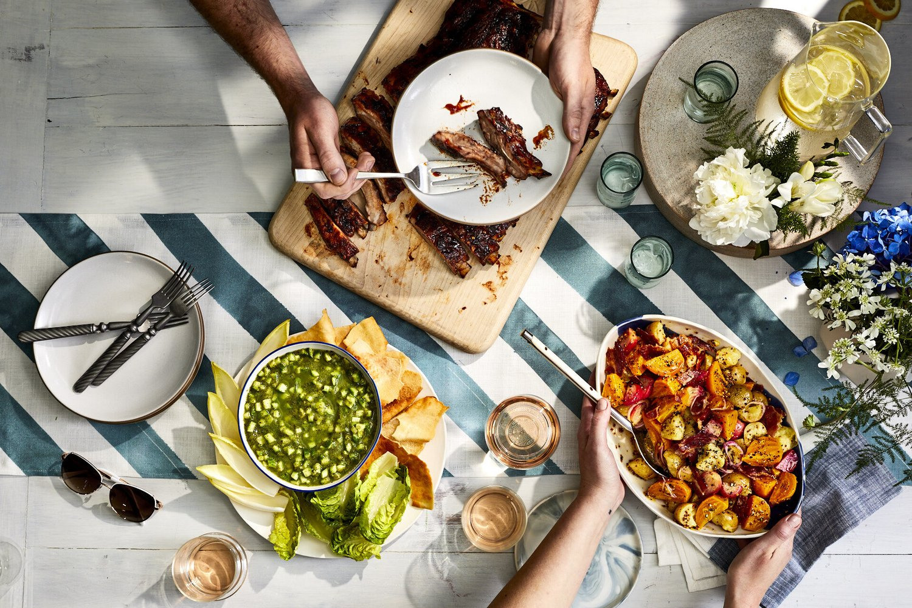
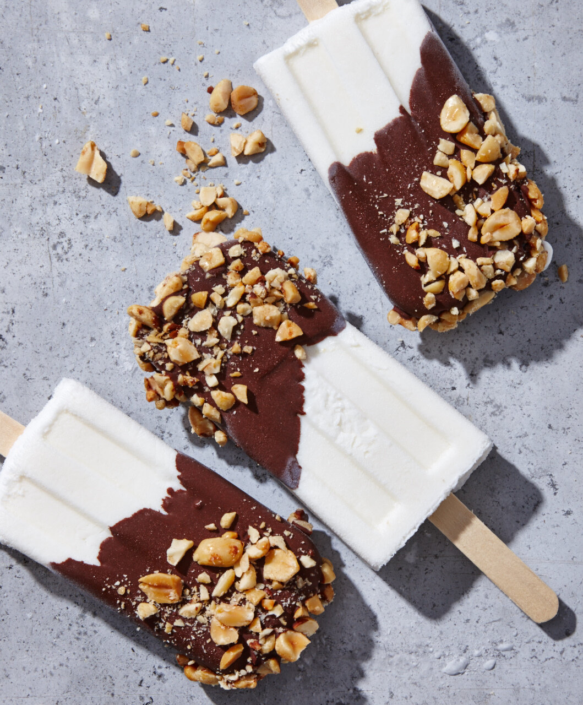
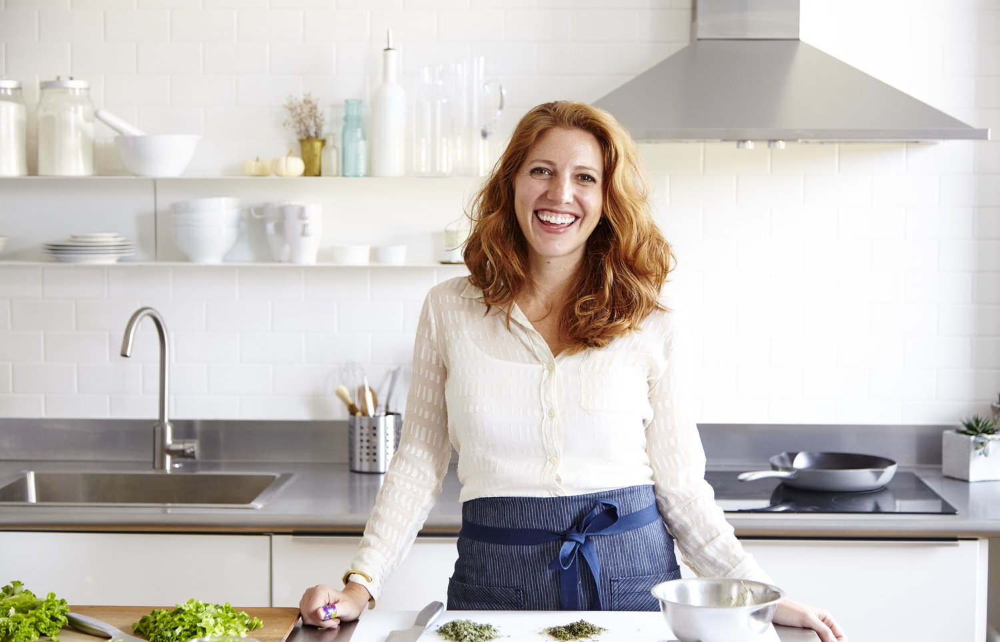

Dawn K. Perry
Writer, editor, and recipe developer. Author of Ready, Set, Cook.
Formerly food director at Real Simple and senior food editor at Bon Appétit.

Book

Ready, Set, Cook
Simon & Schuster
A guide to quick, flexible meals built on what's already in the pantry, from scallion corn cakes to miso ramen, drawing on Dawn's years in the kitchens of Bon Appétit and Real Simple.
“Perry's tutelage is a culinary windfall that will pay big dividends for busy home cooks.”
Publishers Weekly
Buy the bookWriting
- The Washington PostThe pandemic made me depressed about dinner. I'm not alone.
- The New York Times5 fast pastas for long days
- The New York Times3 summery sweets you can make with frozen fruit
- The New York TimesModern chicken breast recipes
- Food & WineHow to make big-batch freezer meatballs
- Elemental6 calming reminders if cooking is stressing you out
- OXOHow to cook while wearing a baby
- Bon Appétit3 martinis for people scared of martinis
- Bon AppétitMake a martini like a pro with Audrey SaundersPDF
- Bon AppétitNavigator: HawaiiPDF
Recipes















About

Photo by Linda PuglieseDawn K. Perry is a writer, editor, and the author of Ready, Set, Cook (Simon & Schuster). Most recently she was food director at Real Simple.
She started out in the pastry and savory kitchens at Quince and worked as a private chef before becoming associate food editor at Everyday Food. In the Real Simple test kitchen, a cake feature she wrote was nominated for an IACP award.
At Bon Appétit she was senior food editor and then the magazine's first digital food editor, working on the IBM Chef Watson partnership and the James Beard Award-winning Cook Like a Pro package. She was also culinary content editor at Marley Spoon, where she was employee number nine.
Her work has appeared in Epicurious, Tasting Table, Food & Wine, Southern Living, and Country Living, and she wrote the Cucumbers volume of Short Stack Editions. A few favorites: pumpkin muffins for Real Simple, banana bread for Bon Appétit, egg curry for Epicurious, and Communal Table for Food & Wine.
Contact
For writing, editing, and recipe development: